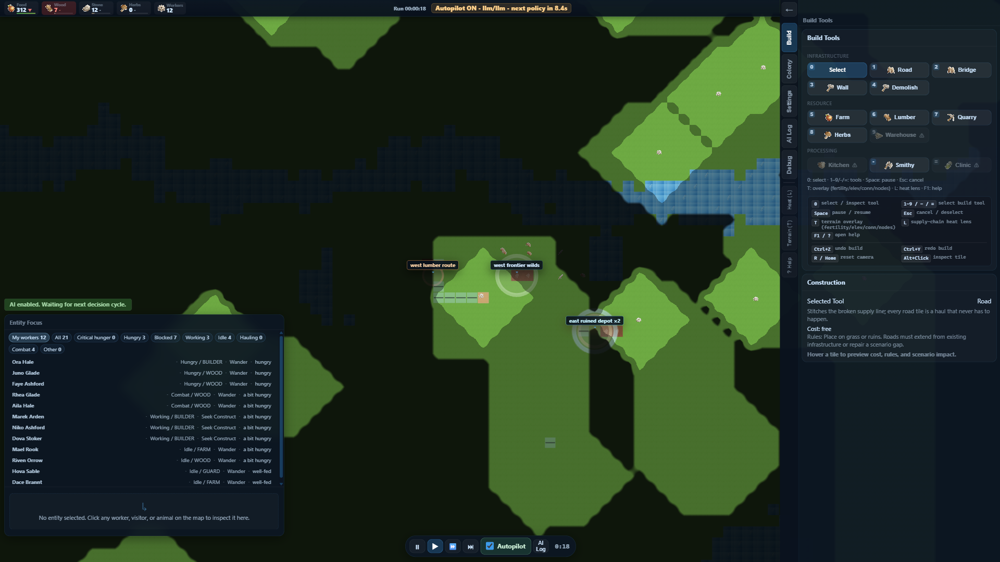
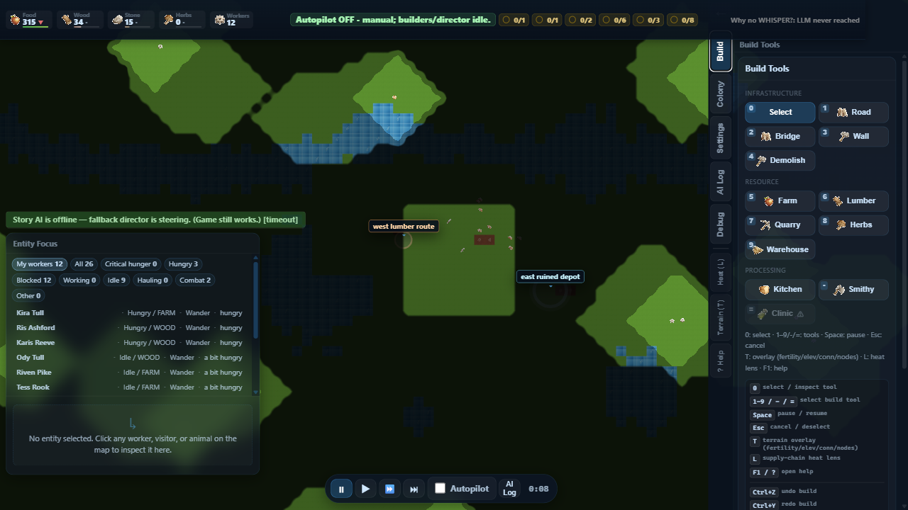
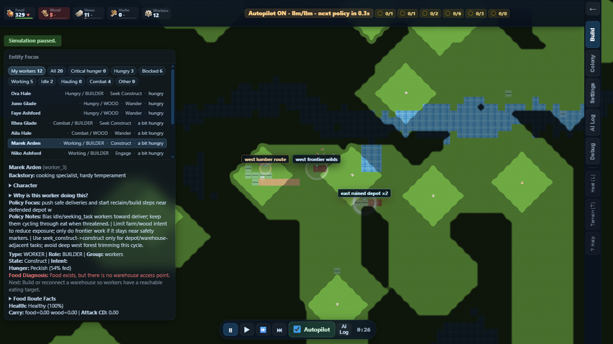
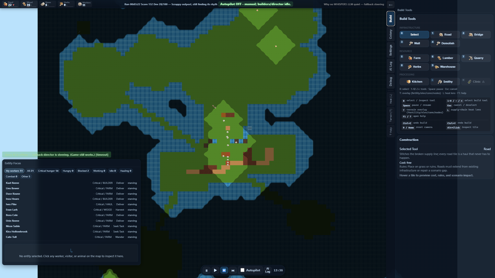
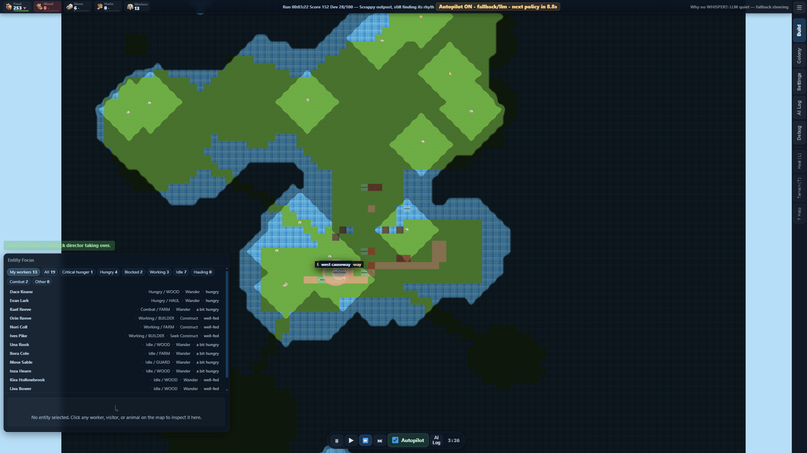
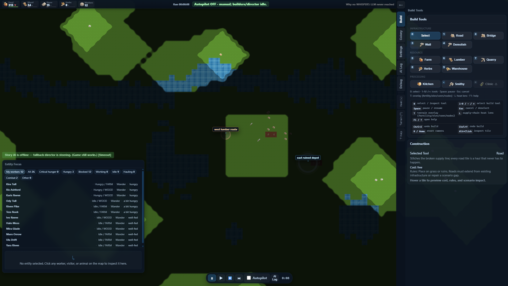

The goal is to make autonomous behavior visible and interpretable. Reducing visual complexity lets you watch flowing convoys, scattering herds, and traffic patterns reshaping as you build.


From the original project proposal: three challenges from computer graphics and game AI, each addressing a different question about running a colony where the player does not control individuals.
Each agent in the world (workers, visitors, animals) must:


IDLE → SEEKING_HARVEST | SEEKING_BUILD | FIGHTING | RESTING SEEKING_HARVEST → HARVESTING | FIGHTING (preempt) HARVESTING → DELIVERING | FIGHTING (preempt) DELIVERING → DEPOSITING | IDLE SEEKING_BUILD → BUILDING | IDLE BUILDING → IDLE | FIGHTING (preempt) FIGHTING → IDLE // always settles back
Living things move in groups, all on the same map at the same time:
Boids is a classic flocking simulation introduced by Craig Reynolds in 1986. Each agent follows three local rules:
const sepWeight = (entity.path && entity.pathIndex < entity.path.length) ? 0.35 // worker on a path: dampen separation : 1.0; // animal or no path: full Boids
Workers walk on a 96 by 72 grid (about 6900 tiles). The path must:


Once disallowing bridges, once allowing them. Score by cost amortized over expected traffic. Each route is assumed to see roughly 50 round trips before becoming obsolete.
const noBridge = aStar({ allowBridge: false }); const withBridge = aStar({ allowBridge: true }); const TRIPS = 50; // expected round trips const sNo = noBridge.length; const sWith = withBridge.length + (withBridge.bridgeCount × BRIDGE_COST) / TRIPS; return sWith < sNo ? withBridge : noBridge;
met stability: 8 rounds, zero P0
met performance: 2 green runs
met action items: all closed
met validator: 2 green streaks
pend two large legacy systems
pend four author-fill items